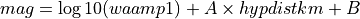

MLh¶
The MLh plugin (previously MLsed) is designed to compute amplitudes and magnitudes according to the Swiss Seismological Service (SED) standards.
Description¶
Amplitude¶
The MLh amplitude calculation is very similar to the original ML. The two differences are:
It uses the maximum of the two horizontal components (average can be configured if necessary)
It uses zero-to-peak in stead of peak-to-peak values
Zero-to-peak is calculated by just dividing the peak-to-peak amplitude by two. This is not exact for unsymmetrical signals, but that doesn’t matter because the code actually generates zero-to-peak amplitudes internally and multiplies them with two. So in the end we get real zero-to-peak values.
Station Magnitude¶
The MLh plugin calculates the individual station magnitude using the following formula:

waampl is the amplitude produced by the MLh plugin. Hypdistkm is the distance from the sensor to the hypocenter in kilometers. A and B are parameters that can be configured in a config file. Several pairs of A and B can be configured for different ranges of hypocenter distance.
Amplitude unit in SeisComP: millimeter (mm)
Time window: 150 s by scautopick or distance dependent
Distance range: 0 - 20 deg
Depth range: 0 - 80 km
Network Magnitude¶
To compute the network magnitude from station magnitudes the SED standard is applied by computing the median value of all contributing station magnitudes without any trimming.
Configuration¶
Add the mlh plugin to the existing plugins in the global configuration. Set the calibration parameters in the global bindings to compute MLh. There exist no default configuration. Add MLh to the list of amplitudes and magnitudes in the configuration of scamp and scmag for computation and in scesv for visibility.